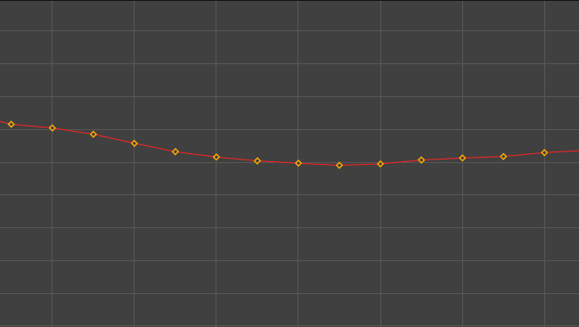

对“曲线图编辑器”(Graph Editor)的有用增强和修复。

-
“曲线图编辑器”(Graph Editor)缩放时调整关键帧大小
- 新的动画首选项“缩放时自动调整关键帧大小”(Auto-resize keys on zoom)可在缩小时调整“曲线图编辑器”(Graph Editor)图表视图中关键帧的大小。如果希望关键帧在缩小时保持相同大小，请取消选中此选项。在编辑具有密集关键帧的曲线时，这非常有用。
- 默认情况下，“缩放时自动调整关键帧大小”(Auto-resize keys on zoom)处于启用状态。
- 可调整大小的切线
-
- 通过两个新的“动画”(Animation)首选项（在“设置”(Settings)下）：“切线控制柄大小”(Tangent handle size)和“切线线宽”(Tangent line thickness)，可以控制“曲线图编辑器”(Graph Editor)图表视图中切线的外观。
- “曲线图编辑器”(Graph Editor)的“无限”(Infinity)选项默认处于活动状态
- 自 Maya 2025.3 起，“曲线图编辑器”(Graph Editor)的“视图”(View)菜单中的“无限”(Infinity)选项默认处于启用状态。在 Maya 的早期版本中，“无限”(Infinity)设置为禁用。
- 使用“无限”(Infinity)选项可显示或隐藏已外推到动画曲线第一个关键帧和最后一个关键帧之外的动画曲线。默认情况下，将恒定显示第一个关键帧之前以及最后一个关键帧之后的曲线。
- 已重命名“曲线图编辑器”(Graph Editor)颜色设置
- 为清晰起见，“颜色设置”(Color Settings)窗口中的以下“曲线图编辑器”(Graph Editor)界面元素已重命名：
- 在“颜色设置”(Color Settings)窗口中，“活动选择颜色”(Active Selection Color)现在称为“活动选择关键帧颜色”(Active Selection Key Color)，以便更好地与其他选择颜色区分开来。